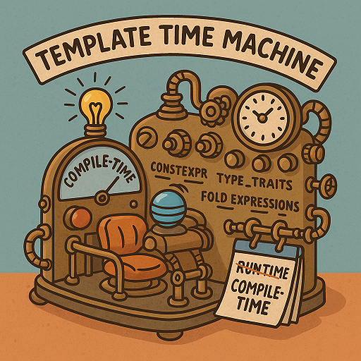

Metaprogramming
Boost provides several libraries that are highly useful in metaprogramming, and can greatly ease the process of building your own metaprogramming-based C++ library. You will need to clearly understand heterogeneous types (1) and tuples (2).
-
- Caution
-
Metaprogramming in C++ is a complex topic that can lead to complex code. It should be used judiciously, as it can make code more difficult to understand and maintain. Also, modern C++ (C++11 and later) provides many features, such as
constexprand variadic templates, that can achieve at runtime what was previously only possible with metaprogramming, so make sure to familiarize yourself with these features before delving too deeply into metaprogramming.
Libraries
-
Boost.Mp11: A metaprogramming library that provides a framework of compile-time algorithms, preprocessor directives, sequences and metafunctions, that can greatly facilitate metaprogramming tasks.
-
Boost.Hana: This is a modern, high-level library for metaprogramming. Like Boost.Fusion, it is used for working with heterogeneous collections, but it uses modern C++ features and can be easier to use than (and can be considered a successor to) both Boost.Mpl and Boost.Fusion.
-
Boost.TypeTraits: Provides a collection of templates for information about types. This can be useful in many metaprogramming tasks, as it allows for compile-time introspection of types.
-
Boost.StaticAssert: Provides a macro for compile-time assertions. This can be useful to enforce constraints at compile time.
- Notes
-
Boost.Mpl, Boost.Fusion and Boost.Preprocessor, all still available in the Boost library, have been superseded by Boost.Mp11 and Boost.Hana.
The code in this tutorial was written and tested using Microsoft Visual Studio (Visual C++ 2022, Console App project) with Boost version 1.88.0.
Metaprogramming Applications
Metaprogramming, the practice of writing code that generates or manipulates other code, has several powerful applications, particularly in languages like C++ that support compile-time metaprogramming. Be careful though, despite its power, metaprogramming can also lead to complex, hard-to-understand code and should be used judiciously. Here are some of the primary applications of metaprogramming:
-
Code Generation: One of the most common uses of metaprogramming is to automatically generate code. This can help to reduce boilerplate, prevent repetition, and facilitate the adherence to the DRY (Don’t Repeat Yourself) principle.
-
Optimization: Metaprogramming can be used to generate specialized versions of algorithms or data structures, which can lead to more efficient code. For example, in C++, template metaprogramming can be used to generate unrolled versions of loops, which can be faster because they eliminate the overhead of loop control.
-
Domain Specific Languages (DSLs): Metaprogramming can be used to create domain-specific languages within a host language. This can make the code more expressive and easier to write and read in specific domains. A classic example in C++ is Boost.Spirit, a library for creating parsers directly in C++ code.
-
Interface Generation: Metaprogramming can be used to generate interfaces, for example, serialization and deserialization methods for a variety of formats. This can greatly simplify the process of implementing such interfaces.
-
Reflection and Introspection: Although C++ does not support reflection directly, metaprogramming can be used to emulate some aspects of reflection, such as type traits and type-based dispatch.
-
Policy-based Design: This is a design paradigm in C++ where behavior is encapsulated in separate classes (policies), and classes are composed by specifying a set of policies as template parameters. This allows for high flexibility and reusability while maintaining performance.
Automatic Code Generation Sample
The scenario is that we want to create a serializer for multiple types (int, double, std::string) without manually writing code for each one.
We’ll start by using Boost.Mp11 to generate a tuple of types at compile-time, and apply a function to each type automatically.
#include <boost/mp11.hpp>
#include <iostream>
namespace mp = boost::mp11;
// Example function to "serialize" different types
template <typename T>
void serialize(const T& value) {
std::cout << "Serializing: " << value << "\n";
}
// Generate and call functions for multiple types
template <typename... Types>
void auto_generate_serializers(std::tuple<Types...> data) {
// Iterate over each type and call serialize()
mp::mp_for_each<std::tuple<Types...>>([&](auto type_wrapper) {
using T = decltype(type_wrapper);
serialize(std::get<T>(data)); // Automatically gets the correct type from tuple
});
}
int main() {
// Define a tuple of different types
std::tuple<int, double, std::string> data(42, 3.14, "Hello, MP11!");
// Automatically generate and call serializers
auto_generate_serializers(data);
return 0;
}Serialize a User-Defined Struct
Our scenario makes more sense if we want to serialize a custom user-defined struct. A simple structure in this example, but it could be quite complex.
#include <boost/mp11.hpp>
#include <iostream>
namespace mp = boost::mp11;
// Custom struct
struct Person {
std::string name;
int age;
};
// Overload `operator<<` to allow printing of Person objects
std::ostream& operator<<(std::ostream& os, const Person& p) {
return os << "{ Name: " << p.name << ", Age: " << p.age << " }";
}
// Serialize function template
template <typename T>
void serialize(const T& value) {
std::cout << "Serializing: " << value << "\n";
}
// Specialization for Person (if needed)
template <>
void serialize(const Person& p) {
std::cout << "Serializing Person -> Name: " << p.name << ", Age: " << p.age << "\n";
}
// Automatically process multiple types in a tuple
template <typename... Types>
void auto_generate_serializers(std::tuple<Types...> data) {
mp::mp_for_each<std::tuple<Types...>>([&](auto type_wrapper) {
using T = decltype(type_wrapper);
serialize(std::get<T>(data)); // Extract correct type from tuple and serialize
});
}
int main() {
// Define a tuple with primitive types + a custom struct
std::tuple<int, double, std::string, Person> data(42, 3.14, "Hello, MP11!", {"Alice", 30});
// Automatically generate and call serializers
auto_generate_serializers(data);
return 0;
}- Note
-
The code supports
operator<<for printing, and nowmp_for_eachautomatically handlesPersonjust like other types.
Compile-time Type Checking
Let’s extend the sample to integrate Boost.TypeTraits to determine if a type is serializable at compile time. The functions we will use are is_arithmetic<T> to check if T is a number type (int, double, etc.), and is_class<T> to check if T is a user-defined class (Person, etc.). The idea is that the compile-time filtering ensures that the code can only process serializable types.
- Note
-
A
voidis an example of a non-serializable type.
#include <boost/mp11.hpp>
#include <boost/type_traits.hpp>
#include <iostream>
namespace mp = boost::mp11;
// Custom struct
struct Person {
std::string name;
int age;
};
// Overload `operator<<` to allow printing of Person objects
std::ostream& operator<<(std::ostream& os, const Person& p) {
return os << "{ Name: " << p.name << ", Age: " << p.age << " }";
}
// Serialize function template
template <typename T>
void serialize(const T& value) {
if constexpr (boost::is_arithmetic<T>::value || std::is_same<T, std::string>::value) {
std::cout << "Serializing: " << value << "\n";
} else if constexpr (boost::is_class<T>::value) {
std::cout << "Serializing Class -> ";
std::cout << value << "\n"; // Uses operator<< overload
} else {
std::cout << "Skipping unsupported type!\n";
}
}
// Automatically process serializable types in a tuple
template <typename... Types>
void auto_generate_serializers(std::tuple<Types...> data) {
mp::mp_for_each<std::tuple<Types...>>([&](auto type_wrapper) {
using T = decltype(type_wrapper);
// Only serialize supported types
if constexpr (boost::is_arithmetic<T>::value || boost::is_class<T>::value || std::is_same<T, std::string>::value) {
serialize(std::get<T>(data));
} else {
std::cout << "Skipping non-serializable type\n";
}
});
}
int main() {
// Define a tuple with primitive types, a custom struct, and an unsupported type
std::tuple<int, double, std::string, Person, void*> data(42, 3.14, "Boost Rocks!", {"Alice", 30}, nullptr);
// Automatically generate and call serializers
auto_generate_serializers(data);
return 0;
}- Note
-
Uses
if constexprfor compile-time filtering, andstd::stringis explicitly handled.
Add Tuple Processing at Runtime
Boost.Mp11 is for pure type-based metaprogramming (so works only at compile time), whereas Boost.Hana takes a value-based metaprogramming approach (it works at both compile time and runtime). In a real application, you may well choose to use one of these two libraries, and not both!
Boost.Hana adds efficient tuple handling at runtime (for example, easier access and transformation), in addition to tag-based dispatching to categorize different types (arithmetic, class, etc.), and concise functional-style operations. To summarize when to use each library:
| Feature | Boost.Mp11 | Boost.Hana |
|---|---|---|
Type-based Metaprogramming |
Yes |
Yes |
Value-based Metaprogramming |
No |
Yes |
Compile-time Transformations |
Yes |
Yes |
Runtime Tuple Handling |
No |
Yes |
Easier Type Mapping |
No |
Yes |
Better Compile-Time Speed |
Yes |
No, Slower |
Let’s update our sample to include tag dispatching, so each type is classified at compile time, and runtime tuple processing, so the sample iterates over heterogeneous types at runtime. Not having all metaprogramming processes occur at the same time does add a level to your program complexity!

#include <boost/hana.hpp>
#include <boost/mp11.hpp>
#include <boost/type_traits.hpp>
#include <iostream>
namespace hana = boost::hana;
namespace mp = boost::mp11;
// Custom struct
struct Person {
std::string name;
int age;
};
// Overload `operator<<` for printing
std::ostream& operator<<(std::ostream& os, const Person& p) {
return os << "{ Name: " << p.name << ", Age: " << p.age << " }";
}
// Tag-based dispatching
auto classify = hana::make_map(
hana::make_pair(hana::type_c<int>, "Integer"),
hana::make_pair(hana::type_c<double>, "Floating Point"),
hana::make_pair(hana::type_c<std::string>, "String"),
hana::make_pair(hana::type_c<Person>, "Custom Struct")
);
// Serialize function
template <typename T>
void serialize(const T& value) {
if constexpr (boost::is_arithmetic<T>::value || std::is_same<T, std::string>::value) {
std::cout << "Serializing (" << hana::find(classify, hana::type_c<T>).value() << "): " << value << "\n";
} else if constexpr (boost::is_class<T>::value) {
std::cout << "Serializing (Custom Struct) -> " << value << "\n";
} else {
std::cout << "Skipping non-serializable type!\n";
}
}
// Process a tuple
template <typename Tuple>
void auto_generate_serializers(Tuple data) {
hana::for_each(data, [](auto x) {
serialize(x);
});
}
int main() {
// Declare a tuple (runtime and compile-time)
auto data = hana::make_tuple(42, 3.14, "Boost Rocks!", Person{"Alice", 30});
// Automatically process serializable elements
auto_generate_serializers(data);
return 0;
}- Note
-
Tag dispatching is handled by
hana::make_map, and runtime tuple processing is managed byhana::for_each.
Footnotes
(1)
Heterogeneous refers to data structures or operations that can handle multiple types, rather than being restricted to a single type. This is particularly useful in template-based programming, where different types can be stored and manipulated in a type-safe manner at compile time. A key example is std::tuple or boost::hana::tuple, which allow elements of different types to coexist in a single structure, enabling powerful compile-time computations and flexible generic programming.
(2)
A tuple is a fixed-size, ordered collection of heterogeneous types, typically represented at compile-time using template-based constructs. Unlike runtime tuples (such as std::tuple), metaprogramming tuples primarily serve as type lists or compile-time containers, enabling static type manipulation, transformations, and computations. Metaprogramming tuples are frequently used in Boost.Mp11, Boost.Hana, and Boost.Fusion, where they allow for:
-
Type introspection - examining contained types at compile-time
-
Type transformations - modifying types before instantiation
-
Static dispatching - choosing behavior based on type properties
-
Compile-time iteration - for example,
mp_for_eachin Boost.Mp11
For example, a metaprogramming tuple can represent a heterogeneous list of types:
using my_types = boost::mp11::mp_list<int, double, std::string>;This mp_list is a type-level tuple that can be manipulated without creating runtime instances.
Unlike std::tuple, which holds actual values, metaprogramming tuples operate entirely at the type level, making them invaluable for zero-runtime-cost template metaprogramming.